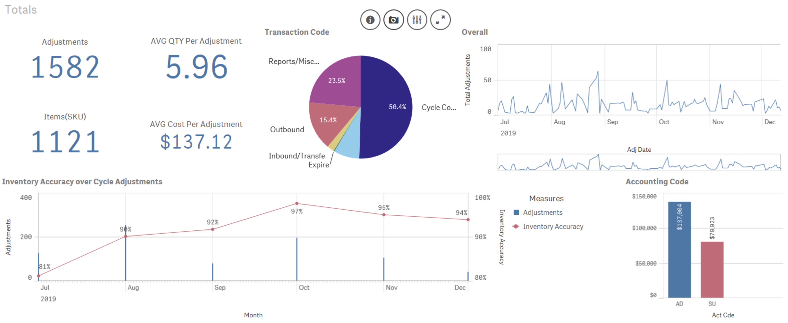
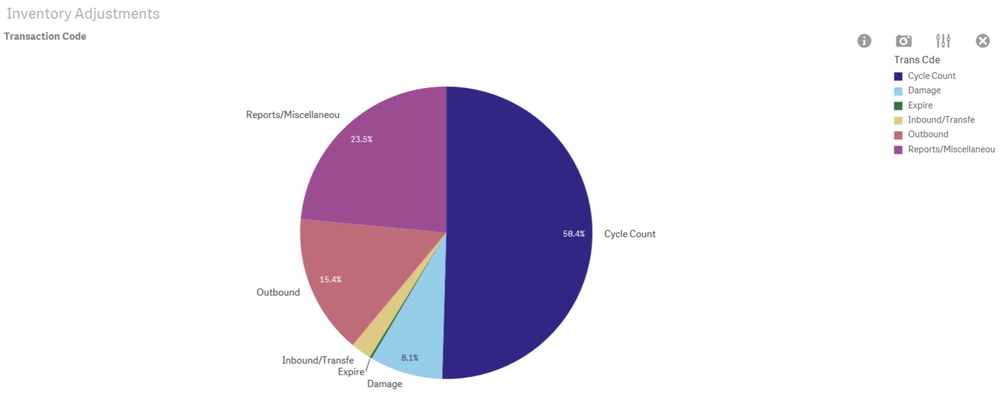
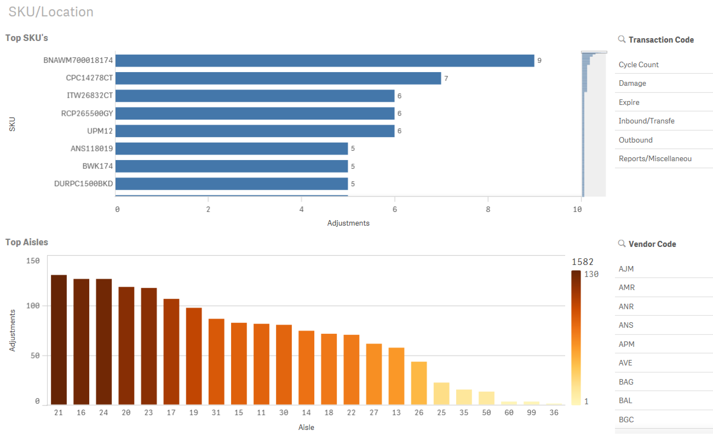

Software: QlikSense Enterprise
Database: Hyperion Oracle Enterprise(SQL)
Time: September/2019-Ongoing
This Dashboard allows for better tracking and analysis of inventory adjustments and inventory accuracy. The approach used in this project, is to concentrate resources on SKU's and physical warehouse locations that have the most impact. This has led to the reduction of adjustments by 10% while increasing inventory accuracy.
(click images for increased view)
Tracks and analyze key metrics for analysis.
-------------------------------------------------------------------------------------------------------
Selected graph from the main dashboard, gives more enlarged detailed view.
-------------------------------------------------------------------------------------------------------
Top visualization graphs SKU's with the most adjustments.
Bottom visualization graphs physical warehouse aisles with the most adjustments.
Both graphs can be filtered by Transaction Code or Vendor(Supplier) code.
Example: all SKU's affected by Transaction Code 'Outbound' can be filtered and cycled more frequently for better accuracy, while also partnering with Shipping department to ensure this SKU's are double checked.
